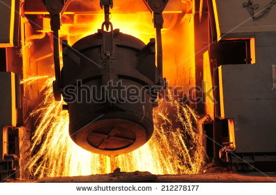
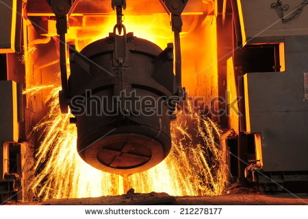

SIDERMES является поставщиком измерительного оборудования параметров расплавленного металла с 1978 года, постоянно совершенствуя свои системы и технологии для повышения качества выпускаемой продукции. Благодаря опыту инженеров и квалифицированного персонала, компания SIDERMES заслужила репутацию одного из лучших и уважаемых специализированных поставщиков на мировом уровне и присутствует на 5 континентах через свои филиалы, дилеров и агентов.
Центры технического обслуживания имеются в большинстве стран Европы, Африки и Азии, Центральной и Южной Америки, а в ближайшее время предусматривается присутствие в других еще неохваченных государствах. SIDERMES предлагает услуги экспертов, способных удовлетворить любые потребности заказчиков в области технического обслуживания, предлагая также и линейку цифровых приборов, соединяемых с ПК или ПЛК. С момента своего основания SIDERMES поставила более 200 миллионов датчиков, а многие металлургические предприятия по всему миру оснащены и цифровыми приборами SIDERMES или системой автоматического измерения ADS®. Располагая штатом более 100 человек, группа SIDERMES имеет чрезвычайно гибкую организацию и может удовлетворить любой запрос в самые короткие сроки. С 1989 года для удовлетворения все более жестких требований охраны труда и качества измерений на многие предприятия для различного металлургического применения поставляется также система автоматического измерения.
Основное направление деятельности SIDERMES - производство высококачественных датчиков для всех областей измерения жидких металлов в металлургии. Это производство охватывает все требования контроля и оценки комплексных процессов с расплавленным металлом. Благодаря постоянному совершенствованию производства, SIDERMES располагает обширным ноу-хау, не только в области производства датчиков, но и в области поставки цифровых измерительных приборов и соответствующих комплектующих.
Мы сконцентрированы на качестве и надежности изделий, постоянно отслеживая все особые требования наших заказчиков.
В марте 1994 года система качества SIDERMES прошла сертификацию и на данный момент сертифицирована по ISO 9001:2008.
…ждем начала сотрудничества с вами!